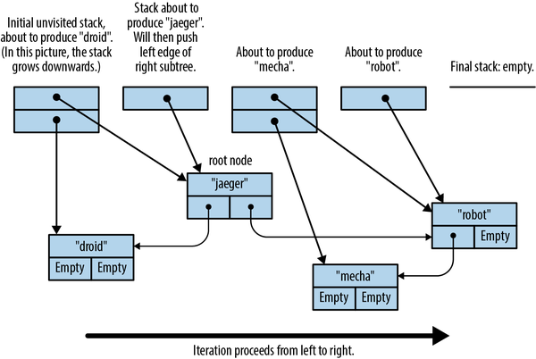

It was the end of a very long day.
Phil Connors
An iterator is a value that produces a sequence of values, typically for a loop to operate on. Rust’s standard library provides iterators that traverse vectors, strings, hash tables, and other collections, but also iterators to produce lines of text from an input stream, connections arriving at a network server, values received from other threads over a communications channel, and so on. And of course, you can implement iterators for your own purposes. Rust’s for loop provides a natural syntax for using iterators, but iterators themselves also provide a rich set of methods for mapping, filtering, joining, collecting, and so on.
Rust’s iterators are flexible, expressive, and efficient. Consider the following function, which returns the sum of the first n positive integers (often called the nth triangle number):
fntriangle(n:i32)->i32{letmutsum=0;foriin1..=n{sum+=i;}sum}
The expression 1..=n is a RangeInclusive<i32> value. A RangeInclusive<i32> is an iterator that produces the integers from its start value to its end value (both inclusive), so you can use it as the operand of the for loop to sum the values from 1 to n.
But iterators also have a fold method, which you can use in the equivalent definition:
fntriangle(n:i32)->i32{(1..=n).fold(0,|sum,item|sum+item)}
Starting with 0 as the running total, fold takes each value that 1..=n produces and applies the closure |sum, item| sum + item to the running total and the value. The closure’s return value is taken as the new running total. The last value it returns is what fold itself returns—in this case, the total of the entire sequence. This may look strange if you’re used to for and while loops, but once you’ve gotten used to it, fold is a legible and concise alternative.
This is pretty standard fare for functional programming languages, which put a premium on expressiveness. But Rust’s iterators were carefully designed to ensure that the compiler can translate them into excellent machine code as well. In a release build of the second definition shown before, Rust knows the definition of fold and inlines it into triangle. Next, the closure |sum, item| sum + item is inlined into that. Finally, Rust examines the combined code and recognizes that there’s a simpler way to sum the numbers from one to n: the sum is always equal to n * (n + 1) / 2. Rust translates the entire body of triangle, loop, closure, and all, into a single multiplication instruction and a few other bits of arithmetic.
This example happens to involve simple arithmetic, but iterators also perform well when put to heavier use. They’re another example of Rust providing flexible abstractions that impose little or no overhead in typical use.
In this chapter, we’ll explain:
The Iterator and IntoIterator traits, which are the foundation of Rust’s iterators
The three stages of a typical iterator pipeline: creating an iterator from some sort of value source; adapting one sort of iterator into another by selecting or processing values as they go by; and then consuming the values the iterator produces
How to implement iterators for your own types
There are a lot of methods, so it’s fine to skim a section once you’ve got the general idea. But iterators are very common in idiomatic Rust, and being familiar with the tools that come with them is essential to mastering the language.
An iterator is any value that implements the std::iter::Iterator trait:
traitIterator{typeItem;fnnext(&mutself)->Option<Self::Item>;...// many default methods}
Item is the type of value the iterator produces. The next method either returns Some(v), where v is the iterator’s next value, or returns None to indicate the end of the sequence. Here we’ve omitted Iterator’s many default methods; we’ll cover them individually throughout the rest of this chapter.
If there’s a natural way to iterate over some type, that type can implement std::iter::IntoIterator, whose into_iter method takes a value and returns an iterator over it:
traitIntoIteratorwhereSelf::IntoIter:Iterator<Item=Self::Item>,{typeItem;typeIntoIter:Iterator;fninto_iter(self)->Self::IntoIter;}
IntoIter is the type of the iterator value itself, and Item is the type of value it produces. We call any type that implements IntoIterator an iterable, because it’s something you could iterate over if you asked.
Rust’s for loop brings all these parts together nicely. To iterate over a vector’s elements, you can write:
println!("There's:");letv=vec!["antimony","arsenic","aluminum","selenium"];forelementin&v{println!("{element}");}
Under the hood, every for loop is just shorthand for calls to IntoIterator and Iterator methods:
letmutiterator=(&v).into_iter();whileletSome(element)=iterator.next(){println!("{element}");}
The for loop uses IntoIterator::into_iter to convert its operand &v into an iterator and then calls Iterator::next repeatedly. Each time that returns Some(element), the for loop executes its body; and if it returns None, the loop finishes.
With this example in mind, here’s some terminology for iterators:
As we’ve said, an iterator is any type that implements Iterator.
An iterable is any type that implements IntoIterator: you can get an iterator over it by calling its into_iter method. The vector reference &v is the iterable in this case.
An iterator produces values.
The values an iterator produces are items. Here, the items are "antimony", "arsenic", and so on.
The code that receives the items an iterator produces is the consumer. In this example, the for loop is the consumer.
Although a for loop always calls into_iter on its operand, you can also pass iterators to for loops directly; this occurs when you loop over a Range, for example. All iterators automatically implement IntoIterator, with an into_iter method that simply returns the iterator.
If you call an iterator’s next method again after it has returned None, the Iterator trait doesn’t specify what it should do. Most iterators will just return None again, but not all. (If this causes problems, the fuse adapter covered in “fuse” can help.)
The Rust standard library documentation explains in detail what sort of iterators each type provides, but the library follows some general conventions to help you get oriented and find what you need.
Most collection types have an obvious algorithm for iteration over their elements. For a Vec, that’s progressively incrementing an index; for a LinkedList, that’s visiting each node one after the other. Collections like this provide iter and iter_mut methods that return the natural iterators over the type, producing a shared or mutable reference to each item. Array slices like &[T] and &mut [T] have iter and iter_mut methods too. These methods are the most common way to get an iterator, if you’re not going to let a for loop take care of it for you:
letv=vec![4,20,12,8,6];letmutiterator=v.iter();assert_eq!(iterator.next(),Some(&4));assert_eq!(iterator.next(),Some(&20));assert_eq!(iterator.next(),Some(&12));assert_eq!(iterator.next(),Some(&8));assert_eq!(iterator.next(),Some(&6));assert_eq!(iterator.next(),None);
This iterator’s item type is &i32: each call to next produces a reference to the next element, until we reach the end of the vector.
Each type is free to implement iter and iter_mut in whatever way makes the most sense for its purpose. The iter method on std::path::Path returns an iterator that produces one path component at a time:
usestd::ffi::OsStr;usestd::path::Path;letpath=Path::new("C:/Users/JimB/Downloads/Fedora.iso");letmutiterator=path.iter();assert_eq!(iterator.next(),Some(OsStr::new("C:")));assert_eq!(iterator.next(),Some(OsStr::new("Users")));assert_eq!(iterator.next(),Some(OsStr::new("JimB")));...
This iterator’s item type is &std::ffi::OsStr, a borrowed slice of a string of the sort accepted by operating system calls.
If there’s more than one common way to iterate over a type, the type usually provides specific methods for each sort of traversal, since a plain iter method would be ambiguous. For example, there is no iter method on the &str string slice type. Instead, if s is a &str, then s.bytes() returns an iterator that produces each byte of s, whereas s.chars() interprets the contents as UTF-8 and produces each Unicode character.
When a type implements IntoIterator, you can call its into_iter method yourself, just as a for loop would:
// You should usually use HashSet, but its iteration order is// nondeterministic, so BTreeSet works better in examples.usestd::collections::BTreeSet;letmutfavorites=BTreeSet::new();favorites.insert("Lucy in the Sky With Diamonds".to_string());favorites.insert("Liebesträume No. 3".to_string());letmutit=favorites.into_iter();assert_eq!(it.next(),Some("Liebesträume No. 3".to_string()));assert_eq!(it.next(),Some("Lucy in the Sky With Diamonds".to_string()));assert_eq!(it.next(),None);
Most collections actually provide several implementations of IntoIterator, for shared references (&T), mutable references (&mut T), and moves (T):
Given a shared reference to the collection, into_iter returns an iterator that produces shared references to its items. For example, in the preceding code, (&favorites).into_iter() would return an iterator whose Item type is &String.
Given a mutable reference to the collection, into_iter returns an iterator that produces mutable references to the items. For example, if vector is some Vec<String>, the call (&mut vector).into_iter() returns an iterator whose Item type is &mut String.
When passed the collection by value, into_iter returns an iterator that takes ownership of the collection and returns items by value; the items’ ownership moves from the collection to the consumer, and the original collection is consumed in the process. For example, the call favorites.into_iter() in the preceding code returns an iterator that produces each string by value; the consumer receives ownership of each string. When the iterator is dropped, any elements remaining in the BTreeSet are dropped too, and the set’s now-empty husk is disposed of.
Since a for loop applies IntoIterator::into_iter to its operand, these three implementations are what create the following idioms for iterating over shared or mutable references to a collection, or consuming the collection and taking ownership of its elements:
forelementin&collection{...}forelementin&mutcollection{...}forelementincollection{...}
Each of these simply results in a call to one of the IntoIterator implementations listed here.
Not every type provides all three implementations. For example, HashSet, BTreeSet, and BinaryHeap don’t implement IntoIterator on mutable references, since modifying their elements would probably violate the type’s invariants: the modified value might have a different hash value, or be ordered differently with respect to its neighbors, so modifying it would leave it incorrectly placed. Other types do support mutation, but only partially. For example, HashMap and BTreeMap produce mutable reference to their entries’ values, but only shared references to their keys, for similar reasons to those given earlier.
The general principle is that iteration should be efficient and predictable, so rather than providing implementations that are expensive or could exhibit surprising behavior (for example, rehashing modified HashSet entries and potentially encountering them again later in the iteration), Rust omits them entirely.
Slices implement two of the three IntoIterator variants; since they don’t own their elements, there is no “by value” case. Instead, into_iter for &[T] and &mut [T] returns an iterator that produces shared and mutable references to the elements. If you imagine the underlying slice type [T] as a collection of some sort, this fits neatly into the overall pattern.
You may have noticed that the first two IntoIterator variants, for shared and mutable references, are equivalent to calling iter or iter_mut on the referent. Why does Rust provide both?
IntoIterator is what makes for loops work, so that’s obviously necessary. But when you’re not using a for loop, it’s clearer to write favorites.iter() than (&favorites).into_iter(). Iteration by shared reference is something you’ll need frequently, so iter and iter_mut are still valuable for their ergonomics.
IntoIterator can also be useful in generic code: you can use a bound like T: IntoIterator to restrict the type variable T to types that can be iterated over. Or, you can write T: IntoIterator<Item = U> to further require the iteration to produce a particular type U. For example, this function dumps values from any iterable whose items are printable with the "{:?}" format:
usestd::fmt::Debug;fndump<T,U>(t:T)whereT:IntoIterator<Item=U>,U:Debug,{foruint{println!("{u:?}");}}
You can’t write this generic function using iter and iter_mut, since they’re not methods of any trait: most iterable types just happen to have methods by those names.
One simple and general way to produce a sequence of values is to provide a closure that returns them.
Given a function returning Option<T>, std::iter::from_fn returns an iterator that simply calls the function to produce its items. For example:
// Cargo.toml: rand = "0.10.1"usestd::iter;// Generate the lengths of 1000 random line segments whose endpoints// are uniformly distributed across the interval [0, 1]. (This isn't a// distribution you're going to find in the `rand_distr` crate, but// it's easy to make yourself.)letlengths:Vec<f64>=iter::from_fn(||{Some((rand::random::<f64>()-rand::random::<f64>()).abs())}).take(1000).collect();
This calls from_fn to make an iterator producing random numbers. Since the iterator always returns Some, the sequence never ends, but we call take(1000) to limit it to the first 1,000 elements. Then collect builds the vector from the resulting iteration. This is an efficient way of constructing initialized vectors; we explain why in “Building Collections: collect and FromIterator”, later in this chapter.
If each item depends on the one before, the std::iter::successors function works nicely. Consider this implementation of the famous Collatz process:
fncollatz_iterations(n:u64)->u64{letnext=|n|matchn{1=>None,nifn%2==0=>Some(n/2),n=>Some(3*n+1),};iter::successors(next(n),|&n|next(n)).count()asu64}
The Collatz process is simple: take a number, and if it’s even, divide it by two; otherwise, multiply by three and add one. Then repeat. Nobody has ever been able to find a number that doesn’t eventually reach 1 after a finite number of iterations, but nobody has been able to prove that it’s impossible, either. The closure next returns None if the provided value is 1, stopping the iteration; otherwise, it applies the Collatz procedure and returns Some, allowing the iteration to continue with the new value as the input. That closure is used both for the first value of the iterator and for all subsequent iterations. The collatz_iterations function just counts the number of iterations before the intevitable happens and returns that value.
Both from_fn and successors accept FnMut closures, so your closures can capture and modify variables from the surrounding scopes. For example, this fibonacci function uses a move closure to capture a variable and use it as its running state:
fnfibonacci()->implIterator<Item=usize>{letmutstate=(0,1);std::iter::from_fn(move||{state=(state.1,state.0+state.1);Some(state.0)})}assert_eq!(fibonacci().take(8).collect::<Vec<_>>(),vec![1,1,2,3,5,8,13,21],);
A note of caution: the from_fn and successors methods are flexible enough that you could turn pretty much any use of iterators into a single call to one or the other, passing complex closures to get the behavior you need. But doing so neglects the opportunity that iterators provide to clarify how data flows through the computation and use standard names for common patterns. Make sure you’ve familiarized yourself with the other iterator methods in this chapter before you lean on these two; there are often nicer ways to get the job done.
Many collection types provide a drain method that takes a mutable reference to the collection and returns an iterator that passes ownership of each element to the consumer. However, unlike the into_iter() method, which takes the collection by value and consumes it, drain merely borrows a mutable reference to the collection, and when the iterator is dropped, it removes any remaining elements from the collection and leaves it empty.
On types that can be indexed by a range, like Strings, vectors, and VecDeques, the drain method takes a range of elements to remove, rather than draining the entire sequence:
letmutouter="Earth".to_string();letinner=String::from_iter(outer.drain(1..4));assert_eq!(outer,"Eh");assert_eq!(inner,"art");
If you do need to drain the entire sequence, use the full range, .., as the argument.
The previous sections are mostly concerned with collection types like vectors and HashMap, but there are many other types in the standard library that support iteration. Table 15-1 summarizes the more interesting ones, but there are many more. We cover some of these methods in more detail in the chapters dedicated to the specific types (namely, Chapters 16, 17, and 18).
| Type or trait | Expression | Notes |
|---|---|---|
std::ops::Range |
1..10 |
Start value is included; end value is not. Only ranges of integers are iterable. |
(1..10).step_by(2) |
Produces 1, 3, 5, 7, 9. |
|
std::ops::RangeFrom |
1.. |
Unbounded iteration of integers. May panic or overflow. |
std::ops::RangeInclusive |
1..=10 |
Like Range, but includes end value. |
Option<T> |
Some(10).iter() |
Yields either no values (None) or one value (Some(v)). |
Result<T, E> |
Ok("blah").iter() |
Similar to Option, producing Ok values. |
Vec<T>, &[T] |
v.windows(16) |
Produces every contiguous slice of the given length, from left to right, with overlap. |
v.chunks(16) |
Produces nonoverlapping, contiguous slices of the given length, from left to right. | |
v.chunks_mut(1024) |
Like chunks, but slices are mutable. |
|
v.split(|byte| byte & 1 != 0) |
Produces slices separated by elements that match the given predicate. | |
v.split_mut(...) |
As above, but produces mutable slices. | |
v.rsplit(...) |
Like split, but produces slices from right to left. |
|
v.splitn(n, ...) |
Like split, but produces at most n slices. |
|
String, &str |
s.bytes() |
Produces the bytes of the UTF-8 form. |
s.chars() |
Produces the chars the UTF-8 represents. |
|
s.split_whitespace() |
Splits string by whitespace, and produces slices of nonspace characters. | |
s.lines() |
Produces slices of the lines of the string. | |
s.split('/') |
Splits string by a character, string, or closure, producing the slices between matches. | |
s.matches(char::is_numeric) |
Produces slices matching the given pattern. | |
std::collections::HashMap,std::collections::BTreeMap |
map.keys(),map.values() |
Produces shared references to keys or values of the map. |
map.values_mut() |
Produces mutable references to entries’ values. | |
std::collections::HashSet,std::collections::BTreeSet |
set1.union(set2) |
Produces shared references to elements of union of set1 and set2. |
set1.intersection(set2) |
Produces shared references to elements of intersection of set1 and set2. |
|
std::sync::mpsc::Receiver |
recv.iter() |
Produces values sent from another thread on the corresponding Sender. |
std::io::Read |
stream.bytes() |
Produces bytes from an I/O stream. |
stream.chars() |
Parses stream as UTF-8 and produces chars. |
|
std::io::BufRead |
bufstream.lines() |
Parses stream as UTF-8, produces lines as Strings. |
bufstream.split(0) |
Splits stream on given byte, produces inter-byte Vec<u8> buffers. |
|
std::fs::ReadDir |
std::fs::read_dir(path) |
Produces directory entries. |
std::net::TcpListener |
listener.incoming() |
Produces incoming network connections. |
| Free functions | std::iter::empty() |
Produces no values, like [].into_iter(). |
std::iter::once(5) |
Produces the given value once, like [5].into_iter(). |
|
std::iter::repeat_n("nan", 16) |
Repeats the given value several times, like ["nan"; 16].into_iter() but more memory-efficient. |
|
std::iter::repeat("#9") |
Repeats the given value forever. |
Once you have an iterator in hand, the Iterator trait provides a broad selection of adapter methods, or simply adapters, that consume one iterator and build a new one with useful behaviors. To see how adapters work, we’ll start with two of the most popular adapters, map and filter. Then we’ll cover the rest of the adapter toolbox, covering almost any way you can imagine to make sequences of values from other sequences: truncation, skipping, combination, reversal, concatenation, repetition, and more.
The Iterator trait’s map adapter lets you transform an iterator by applying a closure to its items. The filter adapter lets you filter out items from an iterator, using a closure to decide which to keep and which to drop.
For example, suppose you’re iterating over lines of text and want to omit leading and trailing whitespace from each line. The standard library’s str::trim method drops leading and trailing whitespace from a single &str, returning a new, trimmed &str that borrows from the original. You can use the map adapter to apply str::trim to each line from the iterator:
lettext=" ponies\ngiraffes\niguanas\nsquid".to_string();letv:Vec<&str>=text.lines().map(str::trim).collect();assert_eq!(v,["ponies","giraffes","iguanas","squid"]);
The text.lines() call returns an iterator that produces the string’s lines. Calling map on that iterator returns a second iterator that applies str::trim to each line and produces the results as its items. Finally, collect gathers those items into a vector.
The iterator that map returns is, of course, itself a candidate for further adaptation. If you want to exclude iguanas from the result, you can write the following:
lettext=" ponies\ngiraffes\niguanas\nsquid".to_string();letv:Vec<&str>=text.lines().map(str::trim).filter(|s|*s!="iguanas").collect();assert_eq!(v,["ponies","giraffes","squid"]);
Here, filter returns a third iterator that produces only those items from the map iterator for which the closure |s| *s != "iguanas" returns true. A chain of iterator adapters is like a pipeline in the Unix shell: each adapter has a single purpose, and it’s clear how the sequence is being transformed as one reads from left to right.
These adapters’ signatures are as follows:
fnmap<B,F>(self,f:F)->implIterator<Item=B>whereSelf:Sized,F:FnMut(Self::Item)->B;fnfilter<P>(self,predicate:P)->implIterator<Item=Self::Item>whereSelf:Sized,P:FnMut(&Self::Item)->bool;
In the standard library, map and filter actually return specific opaque struct types named std::iter::Map and std::iter::Filter. However, just seeing their names is not very informative, so in this book, we’re just going to write -> impl Iterator<Item = ...> instead, since that tells us what we really want to know: the method returns an Iterator that produces items of the given type.
Since most adapters take self by value, they require Self to be Sized (which all common iterators are).
A map iterator passes each item to its closure by value and, in turn, passes along ownership of the closure’s result to its consumer. A filter iterator passes each item to its closure by shared reference, retaining ownership in case the item is selected to be passed on to its consumer. This is why the example must dereference s to compare it with "iguanas": the filter iterator’s item type is &str, so the type of the closure’s argument s is &&str.
There are two important points to notice about iterator adapters.
First, simply calling an adapter on an iterator doesn’t consume any items; it just returns a new iterator, ready to produce its own items by drawing from the first iterator as needed. In a chain of adapters, the only way to make any work actually get done is to call next on the final iterator.
So in our earlier example, the method call text.lines() itself doesn’t actually parse any lines from the string; it just returns an iterator that would parse lines if asked. Similarly, map and filter just return new iterators that would map or filter if asked. No work takes place until collect starts calling next on the filter iterator.
This point is especially important if you use adapters that have side effects. For example, this code prints nothing at all:
["earth","water","air","fire"].iter().map(|elt|println!("{elt}"));
The iter call returns an iterator over the array’s elements, and the map call returns a second iterator that applies the closure to each value the first produces. But there is nothing here that ever actually demands a value from the whole chain, so no next method ever runs. In fact, Rust will warn you about this:
warning: unused `std::iter::Map` that must be used|7 | / ["earth", "water", "air", "fire"]8 | | .iter()9 | | .map(|elt| println!("{elt}"));| |_____________________________________^|= note: iterators are lazy and do nothing unless consumed
The term “lazy” in the error message is not a disparaging term; it’s just jargon for any mechanism that puts off a computation until its value is needed. It is Rust’s convention that iterators should do the minimum work necessary to satisfy each call to next; in the example, there are no such calls at all, so no work takes place.
The second important point is that iterator adapters are a zero-overhead abstraction. Since map, filter, and their companions are generic, applying them to an iterator specializes their code for the specific iterator type involved. This means that Rust has enough information to inline each iterator’s next method into its consumer and then translate the entire arrangement into machine code as a unit. So the lines/map/filter chain of iterators we showed before is as efficient as the code you would probably write by hand:
forlineintext.lines(){letline=line.trim();ifline!="iguanas"{v.push(line);}}
The rest of this section covers the various adapters available on the Iterator trait.
The map adapter is fine in situations where each incoming item produces one outgoing item. But what if you want to delete certain items from the iteration instead of processing them or replace single items with zero or more items? The filter_map and flat_map adapters grant you this flexibility.
The filter_map adapter is similar to map except that it lets its closure either transform the item into a new item (as map does) or drop the item from the iteration. Thus, it’s a bit like a combination of filter and map. Its signature is as follows:
fnfilter_map<B,F>(self,f:F)->implIterator<Item=B>whereSelf:Sized,F:FnMut(Self::Item)->Option<B>;
This is the same as map’s signature, except that here the closure returns Option<B>, not simply B. When the closure returns None, the item is dropped from the iteration; when it returns Some(b), then b is the next item the filter_map iterator produces.
For example, suppose you want to scan a string for whitespace-separated words that can be parsed as numbers, and process the numbers, dropping the other words. You can write:
usestd::str::FromStr;lettext="1\nfrond .25 289\n3.1415 estuary\n";fornumberintext.split_whitespace().filter_map(|w|f64::from_str(w).ok()){println!("{number:4.2}");}
This prints the following:
1.000.25289.003.14
The closure given to filter_map tries to parse each whitespace-separated slice using f64::from_str. That returns a Result<f64, ParseFloatError>, which .ok() turns into an Option<f64>: a parse error becomes None, whereas a successful parse result becomes Some(v). The filter_map iterator drops all the None values and produces the value v for each Some(v).
But what’s the point in fusing map and filter into a single operation like this, instead of just using those adapters directly? The filter_map adapter shows its value in situations like the one just shown, when the best way to decide whether to include the item in the iteration is to actually try to process it. You can do the same thing with only filter and map, but it’s a bit ungainly:
text.split_whitespace().map(|w|f64::from_str(w)).filter(|r|r.is_ok()).map(|r|r.unwrap())
You can think of the flat_map adapter as continuing in the same vein as map and filter_map, except that now the closure can return not just one item (as with map) or zero or one items (as with filter_map), but a sequence of any number of items. The flat_map iterator produces the concatenation of the sequences the closure returns.
The signature of flat_map is shown here:
fnflat_map<U,F>(self,f:F)->implIterator<Item=U::Item>whereF:FnMut(Self::Item)->U,U:IntoIterator;
The closure passed to flat_map must return an iterable, but any sort of iterable will do.1
For example, suppose we have a table mapping countries to their major cities. Given a list of countries, how can we iterate over their major cities?
usestd::collections::HashMap;letmutmajor_cities=HashMap::new();major_cities.insert("Japan",vec!["Tokyo","Kyoto"]);major_cities.insert("The United States",vec!["Portland","Nashville"]);major_cities.insert("Brazil",vec!["São Paulo","Brasília"]);major_cities.insert("Kenya",vec!["Nairobi","Mombasa"]);major_cities.insert("The Netherlands",vec!["Amsterdam","Utrecht"]);letcountries=["Japan","Brazil","Kenya"];for&cityincountries.iter().flat_map(|country|&major_cities[country]){println!("{city}");}
This prints the following:
TokyoKyotoSão PauloBrasíliaNairobiMombasa
One way to look at this would be to say that, for each country, we retrieve the vector of its cities, concatenate all the vectors together into a single sequence, and print that.
But remember that iterators are lazy: it’s only the for loop’s calls to the flat_map iterator’s next method that cause work to be done. The full concatenated sequence is never constructed in memory. Instead, what we have here is a little state machine that draws from the city iterator, one item at a time, until it’s exhausted, and only then produces a new city iterator for the next country. The effect is that of a nested loop, but packaged up for use as an iterator.
The flatten adapter concatenates an iterator’s items, assuming each item is itself an iterable:
usestd::collections::BTreeMap;// A table mapping cities to their parks: each value is a vector.letmutparks=BTreeMap::new();parks.insert("Portland",vec!["Mt. Tabor Park","Forest Park"]);parks.insert("Kyoto",vec!["Tadasu-no-Mori Forest","Maruyama Koen"]);parks.insert("Nashville",vec!["Percy Warner Park","Dragon Park"]);// Build a vector of all parks. `values` gives us an iterator producing// vectors, and then `flatten` produces each vector's elements in turn.letall_parks:Vec<_>=parks.values().flatten().cloned().collect();assert_eq!(all_parks,vec!["Tadasu-no-Mori Forest","Maruyama Koen","Percy Warner Park","Dragon Park","Mt. Tabor Park","Forest Park",],);
The name “flatten” comes from the image of flattening a two-level structure into a one-level structure: the BTreeMap and its Vecs of names are flattened into an iterator producing all the names.
The signature of flatten is as follows:
fnflatten(self)->implIterator<Item=<Self::ItemasIntoIterator>::Item>whereSelf::Item:IntoIterator;
In other words, the underlying iterator’s items must themselves implement IntoIterator so that it is effectively a sequence of sequences. The flatten method then returns an iterator over the concatenation of those sequences. Of course, this is done lazily, drawing a new item from self only when we’re done iterating over the last one.
The flatten method gets used in a few surprising ways. If you have a Vec<Option<...>> and you want to iterate over only the Some values, flatten works beautifully:
assert_eq!(vec![None,Some("day"),None,Some("one")].into_iter().flatten().collect::<Vec<_>>(),vec!["day","one"],);
This works because Option itself implements IntoIterator, representing a sequence of either zero or one elements. The None elements contribute nothing to the iteration, whereas each Some element contributes a single value. Similarly, you can use flatten to iterate over Option<Vec<...>> values: None behaves the same as an empty vector.
Result also implements IntoIterator, with Err representing an empty sequence, so applying flatten to an iterator of Result values effectively squeezes out all the Errs and throws them away, resulting in a stream of the unwrapped success values. We do not recommend ignoring errors in your code, but this is a neat trick people use when they think they know what’s going on.
You may find yourself reaching for flatten when what you actually need is flat_map. For example, the standard library’s str::to_uppercase method, which converts a string to uppercase, works something like this:
fnto_uppercase(&self)->String{self.chars().map(char::to_uppercase).flatten()// there's a better way.collect()}
The reason the flatten is necessary is that ch.to_uppercase() returns not a single character, but an iterator producing one or more characters. Mapping each character to its uppercase equivalent results in an iterator of iterators of characters, and the flatten takes care of splicing them all together into something we can finally collect into a String.
But this combination of map and flatten is so common that Iterator provides the flat_map adapter for just that case. (In fact, flat_map was added to the standard library before flatten.) So the preceding code could instead be written:
fnto_uppercase(&self)->String{self.chars().flat_map(char::to_uppercase).collect()}
The Iterator trait’s take and take_while adapters let you end an iteration after a certain number of items or when a closure decides to cut things off. Their signatures are as follows:
fntake(self,n:usize)->implIterator<Item=Self::Item>whereSelf:Sized;fntake_while<P>(self,predicate:P)->implIterator<Item=Self::Item>whereSelf:Sized,P:FnMut(&Self::Item)->bool;
Both take ownership of an iterator and return a new iterator that passes along items from the first one, possibly ending the sequence earlier. The take iterator returns None after producing at most n items. The take_while iterator applies predicate to each item and returns None in place of the first item for which predicate returns false and on every subsequent call to next.
For example, given an email message with a blank line separating the headers from the message body, you can use take_while to iterate over only the headers:
letmessage="\To: jimb\r\n\From: superego <editor@oreilly.com>\r\n\\r\n\Did you get any writing done today?\r\n\When will you stop wasting time plotting fractals?\r\n";forheaderinmessage.lines().take_while(|l|!l.is_empty()){println!("{header}");}
Recall from “String and Character Literals” that when a line in a string ends with a backslash, Rust doesn’t include the indentation of the next line in the string, so none of the lines in the string has any leading whitespace. This means that the third line of message is blank. The take_while adapter terminates the iteration as soon as it sees that blank line, so this code prints only the two lines:
To: jimbFrom: superego <editor@oreilly.com>
The Iterator trait’s skip and skip_while methods are the complement of take and take_while: they drop a certain number of items from the beginning of an iteration, or drop items until a closure finds one acceptable, and then pass the remaining items through unchanged. Their signatures are as follows:
fnskip(self,n:usize)->implIterator<Item=Self::Item>whereSelf:Sized;fnskip_while<P>(self,predicate:P)->implIterator<Item=Self::Item>whereSelf:Sized,P:FnMut(&Self::Item)->bool;
One common use for the skip adapter is to skip the command name when iterating over a program’s command-line arguments. In Chapter 2, our greatest common denominator calculator used the following code to loop over its command-line arguments:
forarginstd::env::args().skip(1){...}
The std::env::args function returns an iterator that produces the program’s arguments as Strings, the first item being the name of the program itself. That’s not a string we want to process in this loop. Calling skip(1) on that iterator returns a new iterator that drops the program name the first time it’s called and then produces all the subsequent arguments.
The skip_while adapter uses a closure to decide how many items to drop from the beginning of the sequence. You can iterate over the body lines of the message from the previous section like this:
forbodyinmessage.lines().skip_while(|l|!l.is_empty()).skip(1){println!("{body}");}
This uses skip_while to skip nonblank lines, but that iterator does produce the blank line itself—after all, the closure returned false for that line. So we use the skip method as well to drop that, giving us an iterator whose first item will be the message body’s first line. Taken together with the declaration of message from the previous section, this code prints:
Did you get any writing done today?When will you stop wasting time plotting fractals?
A peekable iterator lets you peek at the next item that will be produced without actually consuming it. You can turn any iterator into a peekable iterator by calling the Iterator trait’s peekable method:
fnpeekable(self)->std::iter::Peekable<Self>whereSelf:Sized;
Here, Peekable<Self> is a struct that implements Iterator<Item = Self::Item>, and Self is the type of the underlying iterator.
A Peekable iterator has an additional method peek that returns an Option<&Item>: None if the underlying iterator is done and otherwise Some(r), where r is a shared reference to the next item. (Note that if the iterator’s item type is already a reference to something, this ends up being a reference to a reference.)
Calling peek tries to draw the next item from the underlying iterator, and if there is one, caches it until the next call to next. All the other Iterator methods on Peekable know about this cache: for example, iter.last() on a peekable iterator iter knows to check the cache after exhausting the underlying iterator.
Peekable iterators are essential when you can’t decide how many items to consume from an iterator until you’ve gone too far. For example, if you’re parsing numbers from a stream of characters, you can’t decide where the number ends until you’ve seen the first nonnumber character following it:
usestd::iter::Peekable;fnparse_number<I>(tokens:&mutPeekable<I>)->u32whereI:Iterator<Item=char>,{letmutn=0;loop{matchtokens.peek(){Some(r)ifr.is_digit(10)=>{n=n*10+r.to_digit(10).unwrap();}_=>returnn,}tokens.next();}}letmutchars="226153980,1766319049".chars().peekable();assert_eq!(parse_number(&mutchars),226153980);// Look, `parse_number` didn't consume the comma! So we will.assert_eq!(chars.next(),Some(','));assert_eq!(parse_number(&mutchars),1766319049);assert_eq!(chars.next(),None);
The parse_number function uses peek to check the next character and consumes it only if it is a digit. If it isn’t a digit or the iterator is exhausted (that is, if peek returns None), we return the number we’ve parsed and leave the next character in the iterator, ready to be consumed.
Once an Iterator has returned None, the trait doesn’t specify how it ought to behave if you call its next method again. Most iterators just return None again, but not all. If your code counts on that behavior, you may be in for a surprise.
The fuse adapter takes any iterator and produces one that will definitely continue to return None once it has done so the first time:
structFlaky(bool);implIteratorforFlaky{typeItem=&'staticstr;fnnext(&mutself)->Option<Self::Item>{ifself.0{self.0=false;Some("totally the last item")}else{self.0=true;// D'oh!None}}}letmutflaky=Flaky(true);assert_eq!(flaky.next(),Some("totally the last item"));assert_eq!(flaky.next(),None);assert_eq!(flaky.next(),Some("totally the last item"));letmutnot_flaky=Flaky(true).fuse();assert_eq!(not_flaky.next(),Some("totally the last item"));assert_eq!(not_flaky.next(),None);assert_eq!(not_flaky.next(),None);
The fuse adapter is probably most useful in generic code that needs to work with iterators of uncertain origin. Rather than hoping that every iterator you’ll have to deal with will be well-behaved, you can use fuse to make sure.
Some iterators are able to draw items from both ends of the sequence. You can reverse such iterators by using the rev adapter. For example, an iterator over a vector could just as easily draw items from the end of the vector as from the start. Such iterators can implement the std::iter::DoubleEndedIterator trait, which extends Iterator:
traitDoubleEndedIterator:Iterator{fnnext_back(&mutself)->Option<Self::Item>;}
You can think of a double-ended iterator as having two fingers marking the current front and back of the sequence. Drawing items from either end advances that finger toward the other; when the two meet, the iteration is done:
letbee_parts=["head","thorax","abdomen"];letmutiter=bee_parts.iter();assert_eq!(iter.next(),Some(&"head"));assert_eq!(iter.next_back(),Some(&"abdomen"));assert_eq!(iter.next(),Some(&"thorax"));assert_eq!(iter.next_back(),None);assert_eq!(iter.next(),None);
The structure of an iterator over a slice makes this behavior easy to implement: it is literally a pair of pointers to the start and end of the range of elements we haven’t yet produced; next and next_back simply draw an item from the one or the other. Iterators for ordered collections like BTreeSet and BTreeMap are double-ended too: their next_back method draws the greatest elements or entries first. In general, the standard library provides double-ended iteration whenever it’s practical.
But not all iterators can do this so easily: an iterator producing values from other threads arriving at a channel’s Receiver has no way to anticipate what the last value received might be. In general, you’ll need to check the standard library’s documentation to see which iterators implement DoubleEndedIterator and which don’t.
If an iterator is double-ended, you can reverse it with the rev adapter:
fnrev(self)->implIterator<Item=Self>whereSelf:Sized+DoubleEndedIterator;
The returned iterator is also double-ended: its next and next_back methods are simply exchanged:
letmeals=["breakfast","lunch","dinner"];letmutiter=meals.iter().rev();assert_eq!(iter.next(),Some(&"dinner"));assert_eq!(iter.next_back(),Some(&"breakfast"));assert_eq!(iter.next(),Some(&"lunch"));assert_eq!(iter.next_back(),None);
Most iterator adapters, if applied to a reversible iterator, return another reversible iterator. For example, map and filter preserve reversibility.
The inspect adapter is handy for debugging pipelines of iterator adapters, but it isn’t used much in production code. It simply applies a closure to a shared reference to each item and then passes the item through. The closure can’t affect the items, but it can do things like print them or make assertions about them.
This example shows a case in which converting a string to uppercase changes its length:
letupper_case:String="große".chars().inspect(|c|println!("before: {c:?}")).flat_map(|c|c.to_uppercase()).inspect(|c|println!(" after: {c:?}")).collect();assert_eq!(upper_case,"GROSSE");
The uppercase equivalent of the lowercase German letter “ß” is “SS,” which is why char::to_uppercase returns an iterator over characters, not a single replacement character. The preceding code uses flat_map to concatenate all the sequences that to_uppercase returns into a single String, printing the following as it does so:
before: 'g'after: 'G'before: 'r'after: 'R'before: 'o'after: 'O'before: 'ß'after: 'S'after: 'S'before: 'e'after: 'E'
The chain adapter appends one iterator to another. More precisely, i1.chain(i2) returns an iterator that draws items from i1 until it’s exhausted and then draws items from i2.
The chain adapter’s signature is as follows:
fnchain<U>(self,other:U)->implIterator<Item=Self::Item>whereSelf:Sized,U:IntoIterator<Item=Self::Item>;
In other words, you can chain an iterator together with any iterable that produces the same item type.
For example:
letv:Vec<i32>=(1..4).chain([20,30,40]).collect();assert_eq!(v,[1,2,3,20,30,40]);
A chain iterator is reversible, if both of its underlying iterators are:
letv:Vec<i32>=(1..4).chain([20,30,40]).rev().collect();assert_eq!(v,[40,30,20,3,2,1]);
A chain iterator keeps track of whether each of the two underlying iterators has returned None and directs next and next_back calls to one or the other as appropriate.
The Iterator trait’s enumerate adapter attaches a running index to the sequence, taking an iterator that produces items A, B, C, ... and returning an iterator that produces pairs (0, A), (1, B), (2, C), .... It looks trivial at first glance, but it’s used surprisingly often.
Consumers can use that index to distinguish one item from another and establish the context in which to process each one. For example, the Mandelbrot set plotter in Chapter 2 splits the image into eight horizontal bands and assigns each one to a different thread. That code uses enumerate to tell each thread which portion of the image its band corresponds to.
It starts with a rectangular buffer of pixels:
letmutpixels=vec![0;columns*rows];
Next, it uses chunks_mut to split the image into horizontal bands, one per thread:
letrows_per_band=rows.div_ceil(threads);...letbands=pixels.chunks_mut(rows_per_band*columns);
And then it iterates over the bands, starting a thread for each one:
for(i,band)inbands.enumerate(){lettop=rows_per_band*i;// start a thread to render rows `top..top + band_rows`...}
Each iteration gets a pair (i, band), where band is the &mut [u8] slice of the pixel buffer the thread should draw into, and i is the index of that band in the overall image, courtesy of the enumerate adapter. Given the boundaries of the plot and the size of the bands, this is enough information for the thread to determine which portion of the image it has been assigned and thus what to draw into band.
You can think of the (index, item) pairs that enumerate produces as analogous to the (key, value) pairs that you get when iterating over a HashMap or other associative collection. If you’re iterating over a slice or vector, the index is the “key” under which the item appears.
The zip adapter combines two iterators into a single iterator that produces pairs holding one value from each iterator, like a zipper joining its two sides into a single seam. The zipped iterator ends when either of the two underlying iterators ends.
For example, you can get the same effect as the enumerate adapter by zipping the unbounded-end range 0.. with the other iterator:
letv:Vec<_>=(0..).zip("ABCD".chars()).collect();assert_eq!(v,vec![(0,'A'),(1,'B'),(2,'C'),(3,'D')]);
In this sense, you can think of zip as a generalization of enumerate: whereas enumerate attaches indices to the sequence, zip attaches any arbitrary iterator’s items. We suggested before that enumerate can help provide context for processing items; zip is a more flexible way to do the same.
The argument to zip doesn’t need to be an iterator itself; it can be any iterable:
usestd::iter;letendings=["once","twice","chicken soup with rice"];letrhyme:Vec<_>=iter::repeat("going").zip(endings).collect();assert_eq!(rhyme,vec![("going","once"),("going","twice"),("going","chicken soup with rice"),],);
Throughout this section, we’ve been attaching adapters to iterators. Once you’ve done so, can you ever take the adapter off again? Usually, no: adapters take ownership of the underlying iterator and provide no method to give it back.
An iterator’s by_ref method borrows a mutable reference to the iterator so that you can apply adapters to the reference. When you’re done consuming items from these adapters, you drop them, the borrow ends, and you regain access to your original iterator.
For example, earlier in the chapter we showed how to use take_while and skip_while to process the header lines and body of a mail message. But what if you want to do both, using the same underlying iterator? Using by_ref, we can use take_while to handle the headers, and when that’s done, get the underlying iterator back, which take_while has left exactly in position to handle the message body:
letmessage="\To: jimb\r\n\From: id\r\n\\r\n\Oooooh, donuts!!\r\n";letmutlines=message.lines();println!("Headers:");forheaderinlines.by_ref().take_while(|l|!l.is_empty()){println!("{header}");}println!("\nBody:");forbodyinlines{println!("{body}");}
The call lines.by_ref() borrows a mutable reference to the iterator, and it is this reference that the take_while iterator takes ownership of. That iterator goes out of scope at the end of the first for loop, meaning that the borrow has ended, so you can use lines again in the second for loop. This prints the following:
Headers:To: jimbFrom: idBody:Oooooh, donuts!!
The by_ref adapter’s definition is trivial: it returns a mutable reference to the iterator. Then, the standard library includes this strange little implementation:
impl<I:Iterator+?Sized>Iteratorfor&mutI{typeItem=I::Item;fnnext(&mutself)->Option<I::Item>{(**self).next()}...}
In other words, if I is some iterator type, then &mut I is an iterator too, whose next method defers to its referent. When you call an adapter on a mutable reference to an iterator, the adapter takes ownership of the reference, not the iterator itself. That’s just a borrow that ends when the adapter goes out of scope.
The cloned adapter takes an iterator that produces references and returns an iterator that produces values cloned from those references, much like iter.map(|item| item.clone()). Naturally, the referent type must implement Clone. For example:
leta=['1','2','3','∞'];assert_eq!(a.iter().next(),Some(&'1'));assert_eq!(a.iter().cloned().next(),Some('1'));
The copied adapter is the same idea, but more restrictive: the referent type must implement Copy. A call like iter.copied() is roughly the same as iter.map(|r| *r). Since every type that implements Copy also implements Clone, cloned is strictly more general, but depending on the item type, a clone call can do arbitrary amounts of allocation and copying. If you’re assuming that would never happen because your item type is something simple, it’s best to use copied to make the type checker check your assumptions.
The cycle adapter returns an iterator that endlessly repeats the sequence produced by the underlying iterator. The underlying iterator must implement std::clone::Clone so that cycle can save its initial state and reuse it each time the cycle starts again.
For example:
letdirs=["North","East","South","West"];letmutspin=dirs.iter().cycle();assert_eq!(spin.next(),Some(&"North"));assert_eq!(spin.next(),Some(&"East"));assert_eq!(spin.next(),Some(&"South"));assert_eq!(spin.next(),Some(&"West"));assert_eq!(spin.next(),Some(&"North"));assert_eq!(spin.next(),Some(&"East"));
Or, for a really gratuitous use of iterators:
usestd::iter;letfizzes=iter::repeat_n("",2).chain(iter::once("fizz")).cycle();letbuzzes=iter::repeat_n("",4).chain(iter::once("buzz")).cycle();letfizzes_buzzes=fizzes.zip(buzzes);letfizz_buzz=(1..100).zip(fizzes_buzzes).map(|tuple|matchtuple{(i,("",""))=>i.to_string(),(_,(fizz,buzz))=>format!("{fizz}{buzz}"),});forlineinfizz_buzz{println!("{line}");}
This plays a children’s word game, now sometimes used as a job interview question for coders, in which the players take turns counting, replacing any number divisible by three with the word fizz, and any number divisible by five with buzz. Numbers divisible by both become fizzbuzz.
So far we’ve covered creating iterators and adapting them into new iterators; here we finish off the process by showing ways to consume them.
Of course, you can consume an iterator with a for loop, or call next explicitly, but there are many common tasks that you shouldn’t have to write out again and again. The Iterator trait provides a broad selection of methods to cover many of these.
The count method draws items from an iterator until it returns None and tells you how many it got. Here’s a short program that counts the number of English vowels in a string:
constVOWELS:[char;5]=['A','E','I','O','U'];fncount_vowels(s:&str)->usize{s.to_uppercase().chars().filter(|c|VOWELS.contains(c)).count()}
The sum and product methods compute the sum or product of the iterator’s items, which must be integers or floating-point numbers:
fntriangle(n:u64)->u64{(1..=n).sum()}assert_eq!(triangle(20),210);fnfactorial(n:u64)->u64{(1..=n).product()}assert_eq!(factorial(20),2432902008176640000);
(You can extend sum and product to work with other types by implementing the std::iter::Sum and std::iter::Product traits, which we won’t describe in this book.)
The min and max methods on Iterator return the least or greatest item the iterator produces. The iterator’s item type must implement std::cmp::Ord so that items can be compared with one another. For example:
assert_eq!([-2,0,1,0,-2,-5].iter().max(),Some(&1));assert_eq!([-2,0,1,0,-2,-5].iter().min(),Some(&-5));
These methods return an Option<Self::Item> so that they can return None if the iterator produces no items.
As explained in “Ordered Comparisons”, Rust’s floating-point types f32 and f64 implement only std::cmp::PartialOrd, not std::cmp::Ord, so you can’t use the min and max methods to compute the least or greatest of a sequence of floating-point numbers. This is not a popular aspect of Rust’s design, but it is deliberate: it’s not clear what such functions should do with IEEE NaN values. Simply ignoring them would risk masking more serious problems in the code.
If you know how you would like to handle NaN values, you can use the max_by and min_by iterator methods instead, which let you supply your own comparison function.
The max_by and min_by methods return the maximum or minimum item the iterator produces, as determined by a comparison function you provide:
usestd::cmp::Ordering;// Compare two f64 values. Panic if given a NaN.fncmp(lhs:&f64,rhs:&f64)->Ordering{lhs.partial_cmp(rhs).unwrap()}letnumbers=[1.0,4.0,2.0];assert_eq!(numbers.iter().copied().max_by(cmp),Some(4.0));assert_eq!(numbers.iter().copied().min_by(cmp),Some(1.0));letnumbers=[1.0,4.0,f64::NAN,2.0];assert_eq!(numbers.iter().copied().max_by(cmp),Some(4.0));// panics
The max_by and min_by methods pass items to the comparison function by reference so that they can work efficiently with any sort of iterator, so cmp expects to take its arguments by reference, even though we’ve used copied to get an iterator that produces f64 items.
The max_by_key and min_by_key methods on Iterator let you select the maximum or minimum item as determined by a closure applied to each item. The closure can select some field of the item or perform a computation on the items. Since you’re often interested in data associated with some minimum or maximum, not just the extremum itself, these functions are often more useful than min and max. Their signatures are as follows:
fnmin_by_key<B:Ord,F>(self,f:F)->Option<Self::Item>whereSelf:Sized,F:FnMut(&Self::Item)->B;fnmax_by_key<B:Ord,F>(self,f:F)->Option<Self::Item>whereSelf:Sized,F:FnMut(&Self::Item)->B;
That is, given a closure that takes an item and returns any ordered type B, return the item for which the closure returned the maximum or minimum B, or None if no items were produced.
For example, if you need to scan a hash table of cities to find the cities with the largest and smallest populations, you could write:
usestd::collections::HashMap;letmutpopulations=HashMap::new();populations.insert("Portland",583_776);populations.insert("Fossil",449);populations.insert("Greenhorn",2);populations.insert("Boring",7_762);populations.insert("The Dalles",15_340);assert_eq!(populations.iter().max_by_key(|&(_name,pop)|pop),Some((&"Portland",&583_776)),);assert_eq!(populations.iter().min_by_key(|&(_name,pop)|pop),Some((&"Greenhorn",&2)),);
The closure |&(_name, pop)| pop gets applied to each item the iterator produces and returns the value to use for comparison—in this case, the city’s population. The value returned is the entire item, not just the value the closure returns. (Naturally, if you were making queries like this often, you’d probably want to arrange for a more efficient way to find the entries than making a linear search through the table.)
You can use the < and == operators to compare strings, vectors, and slices, assuming their individual elements can be compared. Although iterators do not support Rust’s comparison operators, they do provide methods like eq and lt that do the same job, drawing pairs of items from the iterators and comparing them until a decision can be reached. For example:
letpacked="Helen of Troy";letspaced="Helen of Troy";letobscure="Helen of Sandusky";// nice person, just not famousassert!(packed!=spaced);assert!(packed.split_whitespace().eq(spaced.split_whitespace()));// This is true because ' ' < 'o'.assert!(spaced<obscure);// This is true because "Troy" > "Sandusky".assert!(spaced.split_whitespace().gt(obscure.split_whitespace()));
The calls to split_whitespace return iterators over the whitespace-separated words of the string. Using the eq and gt methods on these iterators performs a word-by-word comparison, instead of a character-by-character comparison. These are all possible because &str implements PartialOrd and PartialEq.
Iterators provide the eq and ne methods for equality comparisons, and lt, le, gt, and ge methods for ordered comparisons. The cmp and partial_cmp methods behave like the corresponding methods of the Ord and PartialOrd traits.
The any and all methods apply a closure to each item the iterator produces and return true if the closure returns true for any item, or for all the items:
letid="Iterator";assert!(id.chars().any(char::is_uppercase));assert!(!id.chars().all(char::is_uppercase));
These methods consume only as many items as they need to determine the answer. For example, if the closure ever returns true for a given item, then any returns true immediately, without drawing any more items from the iterator.
The position method applies a closure to each item from the iterator and returns the index of the first item for which the closure returns true. More precisely, it returns an Option of the index: if the closure returns true for no item, position returns None. It stops drawing items as soon as the closure returns true. For example:
lettext="Xerxes";assert_eq!(text.chars().position(|c|c=='e'),Some(1));assert_eq!(text.chars().position(|c|c=='z'),None);
The rposition method is the same, except that it searches from the right. For example:
letbytes=b"Xerxes";assert_eq!(bytes.iter().rposition(|&c|c==b'e'),Some(4));assert_eq!(bytes.iter().rposition(|&c|c==b'X'),Some(0));
The rposition method requires a reversible iterator so that it can draw items from the right end of the sequence. It also requires an exact-size iterator so that it can assign indices the same way position would, starting with 0 at the left. An exact-size iterator is one that implements the std::iter::ExactSizeIterator trait:
traitExactSizeIterator:Iterator{fnlen(&self)->usize{...}fnis_empty(&self)->bool{...}}
The len method returns the number of items remaining, and the is_empty method returns true if iteration is complete.
Naturally, not every iterator knows how many items it will produce in advance. For example, the str::chars iterator used earlier does not (since UTF-8 is a variable-width encoding), so you can’t use rposition on strings. But an iterator over an array of bytes certainly knows the array’s length, so it can implement ExactSizeIterator.
The fold method is a very general tool for accumulating some sort of result over the entire sequence of items an iterator produces. Given an initial value, which we’ll call the accumulator, and a closure, fold repeatedly applies the closure to the current accumulator and the next item from the iterator. The value the closure returns is taken as the new accumulator, to be passed to the closure with the next item. The final accumulator value is what fold itself returns. If the sequence is empty, fold simply returns the initial accumulator.
Many of the other methods for consuming an iterator’s values can be written as uses of fold:
leta=[5,6,7,8,9,10];assert_eq!(a.iter().fold(0,|n,_|n+1),6);// countassert_eq!(a.iter().fold(0,|n,i|n+i),45);// sumassert_eq!(a.iter().fold(1,|n,i|n*i),151200);// product// maxassert_eq!(a.iter().cloned().fold(i32::min_value(),std::cmp::max),10,);
The fold method’s signature is as follows:
fnfold<A,F>(self,init:A,f:F)->AwhereSelf:Sized,F:FnMut(A,Self::Item)->A;
Here, A is the accumulator type. The init argument is an A, as is the closure’s first argument and return value, and the return value of fold itself.
Note that the accumulator values are moved into and out of the closure, so you can use fold with non-Copy accumulator types:
leta=["Pack","my","box","with","five","dozen","liquor","jugs"];// See also: the `join` method on slices, which won't// give you that extra space at the end.letpangram=a.iter().fold(String::new(),|s,w|s+w+" ");assert_eq!(pangram,"Pack my box with five dozen liquor jugs ");
The rfold method is the same as fold, except that it requires a double-ended iterator, and processes its items from last to first:
letweird_pangram=a.iter().rfold(String::new(),|s,w|s+w+" ");assert_eq!(weird_pangram,"jugs liquor dozen five with box my Pack ");
The try_fold method is the same as fold, except that iteration can exit early, without consuming all the values from the iterator. The value returned by the closure you pass to try_fold indicates whether it should return immediately, or continue folding the iterator’s items.
Your closure can return any one of several types, indicating how folding should proceed:
If your closure returns Result<T, E>, perhaps because it does I/O or carries out some other fallible operation, then returning Ok(v) tells try_fold to continue folding, with v as the new accumulator value. Returning Err(e) causes folding to stop immediately. The fold’s final value is a Result carrying the final accumulator value, or the error returned by the closure.
If your closure returns Option<T>, then Some(v) indicates that folding should continue with v as the new accumulator value, and None indicates that iteration should stop immediately. The fold’s final value is also an Option.
Finally, the closure can return a std::ops::ControlFlow value. This type is an enum with two variants, Continue(c) and Break(b), meaning to continue with new accumulator value c, or stop early. The result of the fold is a ControlFlow value: Continue(v) if the fold consumed the entire iterator, yielding the final accumulator value v; or Break(b), if the closure returned that value.
Continue(c) and Break(b) behave exactly like Ok(c) and Err(b). The advantage of using ControlFlow instead of Result is that it makes your code a little more legible when an early exit doesn’t indicate an error, but merely that the answer is ready early. We show an example of this below.
Here’s a program that sums numbers read from its standard input:
usestd::error::Error;usestd::str::FromStr;fnmain()->Result<(),Box<dynError>>{letsum=std::io::stdin().lines().try_fold(0,|sum,line|->Result<u64,Box<dynError>>{Ok(sum+u64::from_str(line?.trim())?)})?;println!("{sum}");Ok(())}
The lines iterator on buffered input streams produces items of type Result<String, std::io::Error>, and parsing the String as an integer may fail as well. Using try_fold here lets the closure return Result<u64, ...>, so we can use the ? operator to propagate failures from the closure out to the main function.
Because try_fold is so flexible, it is used to implement many of Iterator’s other consumer methods. For example, here’s an implementation of all:
fnall<P>(&mutself,mutpredicate:P)->boolwhereSelf:Sized,P:FnMut(Self::Item)->bool,{usestd::ops::ControlFlow::*;self.try_fold((),|_,item|{ifpredicate(item){Continue(())}else{Break(())}})==Continue(())}
Note that this cannot be written with ordinary fold: all promises to stop consuming items from the underlying iterator as soon as predicate returns false, but fold always consumes the entire iterator.
If you are implementing your own iterator type, it’s worth investigating whether your iterator could implement try_fold more efficiently than the default definition from the Iterator trait. If you can speed up try_fold, all the other methods built on it will benefit as well.
The try_rfold method, as its name suggests, is the same as try_fold, except that it draws values from the back, instead of the front, and requires a double-ended iterator.
The nth method takes an index n, skips that many items from the iterator, and returns the next item, or None if the sequence ends before that point. Calling .nth(0) is equivalent to .next().
It doesn’t take ownership of the iterator the way an adapter would, so you can call it many times:
letmutsquares=(0..10).map(|i|i*i);assert_eq!(squares.nth(4),Some(16));assert_eq!(squares.nth(0),Some(25));assert_eq!(squares.nth(6),None);
Its signature is shown here:
fnnth(&mutself,n:usize)->Option<Self::Item>whereSelf:Sized;
The nth_back method is much the same, except that it draws from the back of a double-ended iterator. Calling .nth_back(0) is equivalent to .next_back(): it returns the last item, or None if the iterator is empty.
The last method returns the last item the iterator produces, or None if it’s empty. Its signature is as follows:
fnlast(self)->Option<Self::Item>;
For example:
letsquares=(0..10).map(|i|i*i);assert_eq!(squares.last(),Some(81));
This consumes all the iterator’s items starting from the front, even if the iterator is reversible. If you have a reversible iterator and don’t need to consume all its items, you should instead just write iter.next_back().
The find method draws items from an iterator, returning the first item for which the given closure returns true, or None if the sequence ends before a suitable item is found. Its signature is:
fnfind<P>(&mutself,predicate:P)->Option<Self::Item>whereSelf:Sized,P:FnMut(&Self::Item)->bool;
The rfind method is similar, but it requires a double-ended iterator and searches values from back to front, returning the last item for which the closure returns true.
For example, using the table of cities and populations from “max_by_key, min_by_key”, you could write:
assert_eq!(populations.iter().find(|&(_name,&pop)|pop>1_000_000),None,);assert_eq!(populations.iter().find(|&(_name,&pop)|pop>500_000),Some((&"Portland",&583_776)),);
None of the cities in the table has a population above a million, but there is one city with half a million people.
Sometimes your closure isn’t just a simple predicate casting a Boolean judgment on each item and moving on: it might be something more complex that produces an interesting value in its own right. In this case, find_map is just what you want. Its signature is:
fnfind_map<B,F>(&mutself,f:F)->Option<B>whereF:FnMut(Self::Item)->Option<B>;
This is just like find, except that instead of returning bool, the closure should return an Option of some value. find_map returns the first Option that is Some.
For example, if we have a database of each city’s parks, we might want to see if any of them are volcanoes and provide the name of the park if so:
letbig_city_with_volcano_park=populations.iter().find_map(|(&city,_)|{ifletSome(park)=find_volcano_park(city,&parks){// find_map returns this value, so our caller knows// *which* park we found.returnSome((city,park.name));}// Reject this item, and continue the search.None});assert_eq!(big_city_with_volcano_park,Some(("Portland","Mt. Tabor Park")));
Throughout the book, we’ve been using the collect method to build vectors holding an iterator’s items. For example, in Chapter 2, we called std::env::args() to get an iterator over the program’s command-line arguments and then called that iterator’s collect method to gather them into a vector:
letargs:Vec<String>=std::env::args().collect();
But collect isn’t specific to vectors: in fact, it can build any kind of collection from Rust’s standard library, as long as the iterator produces a suitable item type:
usestd::collections::{HashSet,BTreeSet,LinkedList,HashMap,BTreeMap};letargs:HashSet<String>=std::env::args().collect();letargs:BTreeSet<String>=std::env::args().collect();letargs:LinkedList<String>=std::env::args().collect();// Collecting a map requires (key, value) pairs, so for this example,// zip the sequence of strings with a sequence of integers.letargs:HashMap<String,usize>=std::env::args().zip(0..).collect();letargs:BTreeMap<String,usize>=std::env::args().zip(0..).collect();// and so on
Naturally, collect itself doesn’t know how to construct all these types. Rather, when some collection type like Vec or HashMap knows how to construct itself from an iterator, it implements the std::iter::FromIterator trait, for which collect is just a convenient veneer:
traitFromIterator<A>:Sized{fnfrom_iter<T:IntoIterator<Item=A>>(iter:T)->Self;}
If a collection type implements FromIterator<A>, then its associated function from_iter builds a value of that type from an iterable producing items of type A.
In the simplest case, the implementation could simply construct an empty collection and then add the items from the iterator one by one. For example, std::collections::LinkedList’s implementation of FromIterator works this way.
However, some types can do better than that. For example, constructing a vector from some iterator iter could be as simple as:
letmutvec=Vec::new();foriteminiter{vec.push(item);}vec
But this isn’t ideal: as the vector grows, it may need to expand its buffer, requiring a call to the heap allocator and a copy of the extant elements. Vectors do take algorithmic measures to keep this overhead low, but if there were some way to simply allocate a buffer of the right size to begin with, there would be no need to resize at all.
This is where the Iterator trait’s size_hint method comes in:
traitIterator{...fnsize_hint(&self)->(usize,Option<usize>){(0,None)}}
This method returns a lower bound and optional upper bound on the number of items the iterator will produce. The default definition returns zero as the lower bound and declines to name an upper bound, saying, in effect, “I have no idea,” but many iterators can do better than this. An iterator over a Range, for example, knows exactly how many items it will produce, as does an iterator over a Vec or HashMap. Such iterators provide their own specialized definitions for size_hint.
These bounds are exactly the information that Vec’s implementation of FromIterator needs to size the new vector’s buffer correctly from the start. Insertions still check that the buffer is large enough, so even if the hint is incorrect, only performance is affected, not safety. Other types can take similar steps: for example, HashSet and HashMap also use Iterator::size_hint to choose an appropriate initial size for their hash table.
One note about type inference: at the top of this section, it’s a bit strange to see the same call, std::env::args().collect(), produce four different kinds of collections depending on its context. The return type of collect is its type parameter, so the first two calls are equivalent to the following:
letargs=std::env::args().collect::<Vec<String>>();letargs=std::env::args().collect::<HashSet<String>>();
But as long as there’s only one type that could possibly work as collect’s argument, Rust’s type inference will supply it for you. When you spell out the type of args, you ensure this is the case.
If a type implements the std::iter::Extend trait, then its extend method adds an iterable’s items to the collection:
letmutv:Vec<i32>=(0..5).map(|i|1<<i).collect();v.extend([31,57,99,163]);assert_eq!(v,[1,2,4,8,16,31,57,99,163]);
All of the standard collections implement Extend, so they all have this method; so does String. Arrays and slices, which have a fixed length, do not.
The trait’s definition is as follows:
traitExtend<A>{fnextend<T>(&mutself,iter:T)whereT:IntoIterator<Item=A>;}
Obviously, this is very similar to std::iter::FromIterator: that creates a new collection, whereas Extend extends an existing collection. In fact, several implementations of FromIterator in the standard library simply create a new empty collection and then call extend to populate it. For example, the implementation of FromIterator for std::collections::LinkedList works this way:
impl<T>FromIterator<T>forLinkedList<T>{fnfrom_iter<I:IntoIterator<Item=T>>(iter:I)->Self{letmutlist=Self::new();list.extend(iter);list}}
The partition method divides an iterator’s items among two collections, using a closure to decide where each item belongs:
letthings=["doorknob","mushroom","noodle","giraffe","grapefruit"];// Amazing fact: the name of a living thing always starts with an// odd-numbered letter.let(living,nonliving):(Vec<&str>,Vec<&str>)=things.iter().partition(|name|name.as_bytes()[0]&1!=0);assert_eq!(living,vec!["mushroom","giraffe","grapefruit"]);assert_eq!(nonliving,vec!["doorknob","noodle"]);
Like collect, partition can make any sort of collections you like, although both must be of the same type. And like collect, you’ll need to specify the return type: the preceding example writes out the type of living and nonliving and lets type inference choose the right type parameters for the call to partition.
The signature of partition is as follows:
fnpartition<B,F>(self,f:F)->(B,B)whereSelf:Sized,B:Default+Extend<Self::Item>,F:FnMut(&Self::Item)->bool;
Whereas collect requires its result type to implement FromIterator, partition instead requires std::default::Default, which all Rust collections implement by returning an empty collection, and std::iter::Extend.
Other languages offer partition operations that just split the iterator into two iterators, instead of building two collections. But this isn’t a good fit for Rust: items drawn from the underlying iterator but not yet drawn from the appropriate partitioned iterator would need to be buffered somewhere; you would end up building a collection of some sort internally, anyway.
The for_each method simply applies a closure to each item:
["doves","hens","birds"].iter().zip(["turtle","french","calling"]).zip(2..5).rev().map(|((item,kind),quantity)|{format!("{quantity} {kind} {item}")}).for_each(|gift|{println!("You have received: {gift}");});
This prints:
You have received: 4 calling birdsYou have received: 3 french hensYou have received: 2 turtle doves
This is very similar to a simple for loop, in which you could also use control structures like break and continue. But long chains of adapter calls like this are a little awkward in for loops:
forgiftin["doves","hens","birds"].iter().zip(["turtle","french","calling"]).zip(2..5).rev().map(|((item,kind),quantity)|{format!("{quantity} {kind} {item}")}){println!("You have received: {gift}");}
The pattern being bound, gift, can end up quite far away from the loop body in which it is used.
If your closure needs to be fallible or exit early, you can use try_for_each:
....try_for_each(|gift|{writeln!(&mutoutput_file,"You have received: {gift}")})?;
You can implement the IntoIterator and Iterator traits for your own types, making all the adapters and consumers shown in this chapter available for use, along with lots of other library and crate code written to work with the standard iterator interface. In this section, we’ll show a simple iterator over a range type and then a more complex iterator over a binary tree type.
Suppose we have the following range type (simplified from the standard library’s std::ops::Range<T> type):
structI32Range{start:i32,end:i32,}
Iterating over an I32Range requires two pieces of state: the current value and the limit at which the iteration should end. This happens to be a nice fit for the I32Range type itself, using start as the next value, and end as the limit. So you can implement Iterator like so:
implIteratorforI32Range{typeItem=i32;fnnext(&mutself)->Option<i32>{ifself.start>=self.end{returnNone;}letresult=Some(self.start);self.start+=1;result}}
This iterator produces i32 items, so that’s the Item type. If the iteration is complete, next returns None; otherwise, it produces the next value and updates its state to prepare for the next call.
Of course, a for loop uses IntoIterator::into_iter to convert its operand into an iterator. But the standard library provides a blanket implementation of IntoIterator for every type that implements Iterator, so I32Range is ready for use:
letmutpi=0.0;letmutnumerator=1.0;forkin(I32Range{start:0,end:14}){pi+=numerator/(2*k+1)asf64;numerator/=-3.0;}pi*=12.0_f64.sqrt();// IEEE 754 specifies this result exactly.assert_eq!(piasf32,std::f32::consts::PI);
But I32Range is a special case, in that the iterable and iterator are the same type. Many cases aren’t so simple. For example, here’s the binary tree type from Chapter 10:
enumBinaryTree<T>{Empty,NonEmpty(Box<TreeNode<T>>),}structTreeNode<T>{element:T,left:BinaryTree<T>,right:BinaryTree<T>,}
The classic way to walk a binary tree is to recurse, using the stack of function calls to keep track of your place in the tree and the nodes yet to be visited. But when implementing Iterator for BinaryTree<T>, each call to next must produce exactly one value and return. To keep track of the tree nodes it has yet to produce, the iterator must maintain its own stack. Here’s one possible iterator type for BinaryTree:
useself::BinaryTree::*;// The state of an in-order traversal of a `BinaryTree`.structTreeIter<'a,T>{// A stack of references to tree nodes. Since we use `Vec`'s// `push` and `pop` methods, the top of the stack is the end of the// vector.//// The node the iterator will visit next is at the top of the stack,// with those ancestors still unvisited below it. If the stack is empty,// the iteration is over.unvisited:Vec<&'aTreeNode<T>>,}
When we create a new TreeIter, its initial state should be about to produce the leftmost leaf node in the tree. According to the rules for the unvisited stack, it should thus have that leaf on the top, followed by its unvisited ancestors: the nodes along the left edge of the tree. We can initialize unvisited by walking the left edge of the tree from root to leaf and pushing each node we encounter, so we’ll define a method on TreeIter to do that:
impl<'a,T:'a>TreeIter<'a,T>{fnpush_left_edge(&mutself,muttree:&'aBinaryTree<T>){whileletNonEmpty(refnode)=*tree{self.unvisited.push(node);tree=&node.left;}}}
Writing mut tree lets the loop change which node tree points to as it walks down the left edge, but since tree is a shared reference, it can’t mutate the nodes themselves.
With this helper method in place, we can give BinaryTree an iter method that returns an iterator over the tree:
impl<T>BinaryTree<T>{fniter(&self)->TreeIter<'_,T>{letmutiter=TreeIter{unvisited:Vec::new(),};iter.push_left_edge(self);iter}}
The iter method constructs a TreeIter with an empty unvisited stack and then calls push_left_edge to initialize it. The leftmost node ends up on the top, as required by the unvisited stack’s rules.
Following the standard library’s practices, we can then implement IntoIterator on a shared reference to a tree with a call to BinaryTree::iter:
impl<'a,T:'a>IntoIteratorfor&'aBinaryTree<T>{typeItem=&'aT;typeIntoIter=TreeIter<'a,T>;fninto_iter(self)->Self::IntoIter{self.iter()}}
The IntoIter definition establishes TreeIter as the iterator type for a &BinaryTree.
Finally, in the Iterator implementation, we get to actually walk the tree. Like BinaryTree’s iter method, the iterator’s next method is guided by the stack’s rules:
impl<'a,T>IteratorforTreeIter<'a,T>{typeItem=&'aT;fnnext(&mutself)->Option<&'aT>{// Find the node this iteration must produce,// or finish the iteration. (Use the `?` operator// to return immediately if it's `None`.)letnode=self.unvisited.pop()?;// After `node`, the next thing we produce must be the leftmost// child in `node`'s right subtree, so push the path from here// down. Our helper method turns out to be just what we need.self.push_left_edge(&node.right);// Produce a reference to this node's value.Some(&node.element)}}
If the stack is empty, the iteration is complete. Otherwise, node is a reference to the node to visit now; this call will return a reference to its element field. But first, we must advance the iterator’s state to the next node. If this node has a right subtree, the next node to visit is the subtree’s leftmost node, and we can use push_left_edge to push it, and its unvisited ancestors, onto the stack. But if this node has no right subtree, push_left_edge has no effect, which is just what we want: we can count on the new top of the stack to be node’s first unvisited ancestor, if any.
With IntoIterator and Iterator implementations in place, we can finally use a for loop to iterate over a BinaryTree by reference. Using the add method on BinaryTree from “Populating a Binary Tree”:
// Build a small tree.letmuttree=BinaryTree::Empty;tree.add("jaeger");tree.add("robot");tree.add("droid");tree.add("mecha");// Iterate over it.letmutv=Vec::new();forkindin&tree{v.push(*kind);}assert_eq!(v,["droid","jaeger","mecha","robot"]);
Figure 15-1 shows how the unvisited stack behaves as we iterate through a sample tree. At every step, the next node to be visited is at the top of the stack, with all its unvisited ancestors below it.

All the usual iterator adapters and consumers are ready for use on our trees:
assert_eq!(tree.iter().map(|name|format!("mega-{name}")).collect::<Vec<_>>(),vec!["mega-droid","mega-jaeger","mega-mecha","mega-robot"],);
Iterators are the embodiment of Rust’s philosophy of providing powerful, zero-cost abstractions that improve the expressiveness and readability of code. Iterators don’t replace loops entirely, but they do provide a capable primitive with built-in lazy evaluation and excellent performance.
1 In fact, since Option is an iterable behaving like a sequence of zero or one items, iterator.filter_map(closure) is equivalent to iterator.flat_map(closure), assuming closure returns an Option<T>.